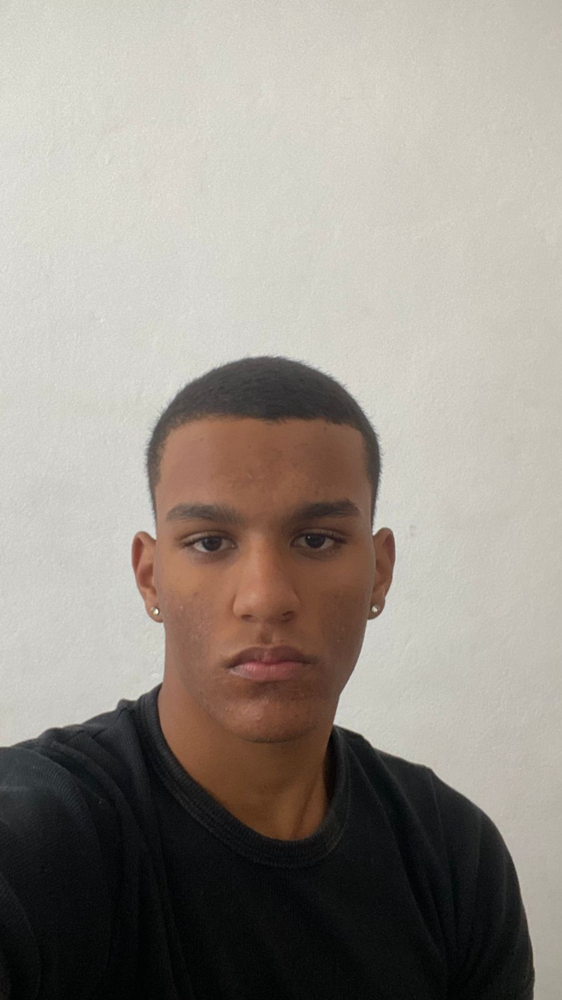

Olá, eu sou o Augusto!
Tenho 19 anos, estudo Análise e Desenvolvimento de Sistemas e trabalho na área de TI da CACEL. Aqui você encontra um pouco sobre mim, meus interesses e meus aprendizados na área de tecnologia.
Veja também meu perfil extra e fique à vontade para entrar em contato.
O que faço
- Jovem Aprendiz no CPD da Cacel; atuou em 2024 na Prefeitura de Lavras pelo programa Jovem em Ação, também no CPD.
- Curso de brigadista e participação no Tiro de Guerra, desenvolvendo disciplina e trabalho em equipe.
- Interesse em tecnologia e sistemas de informação, buscando crescimento pessoal e profissional constante.
- Atualmente curso ADS.